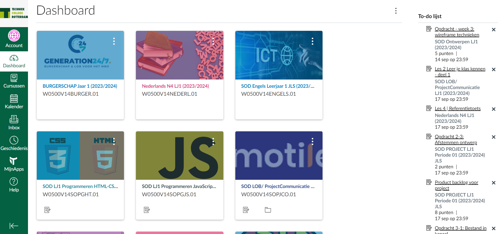

Abulrahman
ga ik als den klaar to vogen
Yahia
ga ik als den klaar to vogen
ouder
ga ik als den klaar to vogen
Canva's
Het is een gebruiksvriendelijk, compleet leermanagementsysteem dat docenten en studenten ondersteunt bij het lesgeven en leren. kan ervoor zorgen dat zowel face-to-face als afstandsonderwijs digitaal optimaal wordt ondersteund. Je kunt hierbij denken aan het vinden van het digitale leermateriaal, samenwerken met de docenten en medestudenten op afstand, opdrachten inleveren.

Wat is canva's?
Meer-informatieLOCATIE
OVER DE LOCATIE
Op deze locatie biedt Techniek College Rotterdam mbo-opleidingen Bouwen & Wonen, IT & Online en Lab & Research. Met het openbaar vervoer is de locatie prima te bereiken. Metro- en busstation Zuidplein ligt op enkele minuten lopen. Kom je met de fiets of scooter, dan kan je die kwijt in de overdekte stalling. Er is een kantine waar je in de pauze of tijdens tussenuren iets kunt eten of drinken. Met al je vragen kan je terecht bij het servicepunt. En zie je allemaal witte jassen? Die horen bij het laboratorium.